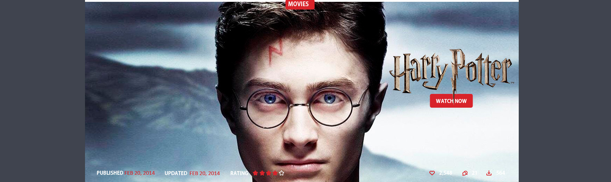
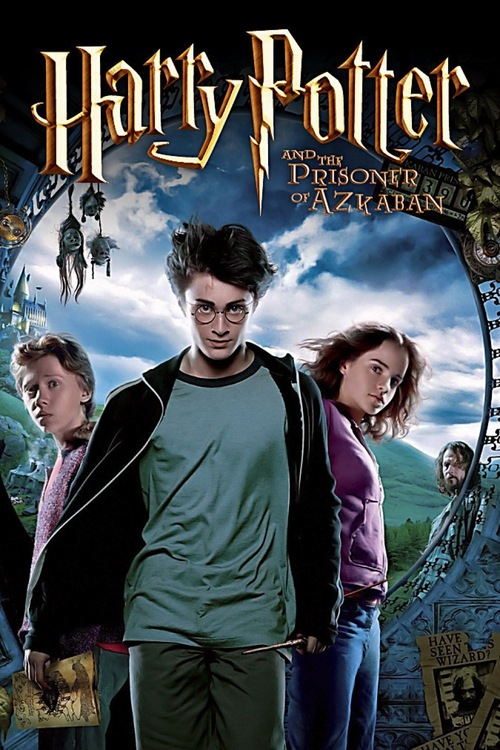

|  | ||
Harry Potter y el prisionero de AzkabanPoco antes de iniciar el tercer año del protagonista en el Colegio Hogwarts, un peligroso y supuesto homicida –Sirius Black– se fuga de la cárcel de Azkaban dejando preocupado al Ministerio de Magia y a la comunidad mágica, pues es el primero que lo logra. Arthur Weasley le advierte a Harry que el prófugo fue un seguidor de Voldemort durante el auge de su poder y que posiblemente se ha escapado para encontrar al causante del eclipse de su maestro, es decir, Harry. Como medida de seguridad, las autoridades del mundo mágico ordenan a los dementores –centinelas de la prisión de Azkaban que te quitan tus recuerdos felices– que vigilen los alrededores del colegio. Sin embargo, gracias a que Harry ha vivido momentos difíciles estos se irán contra Harry, por lo que Black usará sus habilidades animágicas, para lograr penetrar las defensas e introducirse en la escuela, por lo que su encuentro con Harry se hace inevitable. Durante su encuentro, figuran Remus Lupin, Severus Snape y Peter Pettigrew como parte crucial del pasado de los padres de Harry. En su encuentro Harry se encontrará con el horrible pasado de sus padres. |
||